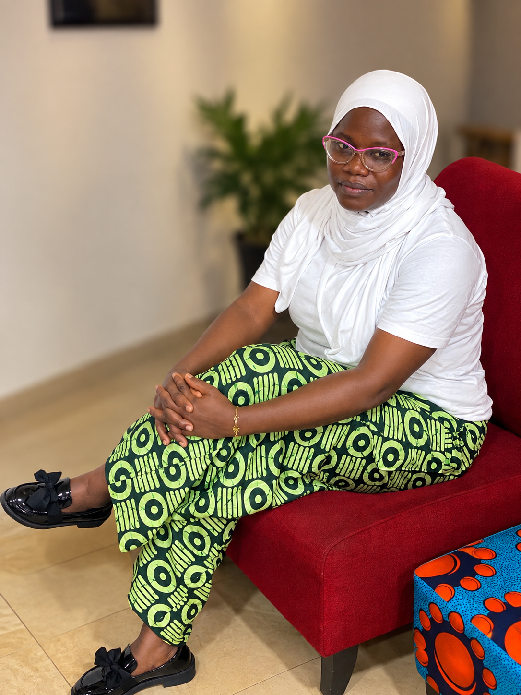

Jubril Munirat Biography

My name is Jubril Munirat Yetunde. I am a Software Engineer
with a passion for developing innovative
programs that expedite
the efficiency and effectiveness of organizational success. Well-
versed
in
technology and writing code to create systems that are
reliable and user-friendly. Skilled leader
who
has the proven ability
to motivate, educate, and manage a team of professionals to build
software
programs and effectively track changes. I hold an HND
in Computer Science from the Federal
Polytechnic,
Offa, Kwara
State. I am currently training at GOMYCODE.I have experience
in various programming
languages and frameworks, including
Python, JavaScript, HTML, CSS, and React. My goal is to
leverage
my
skills and knowledge to contribute to the growth
and success of a forward-thinking organization.